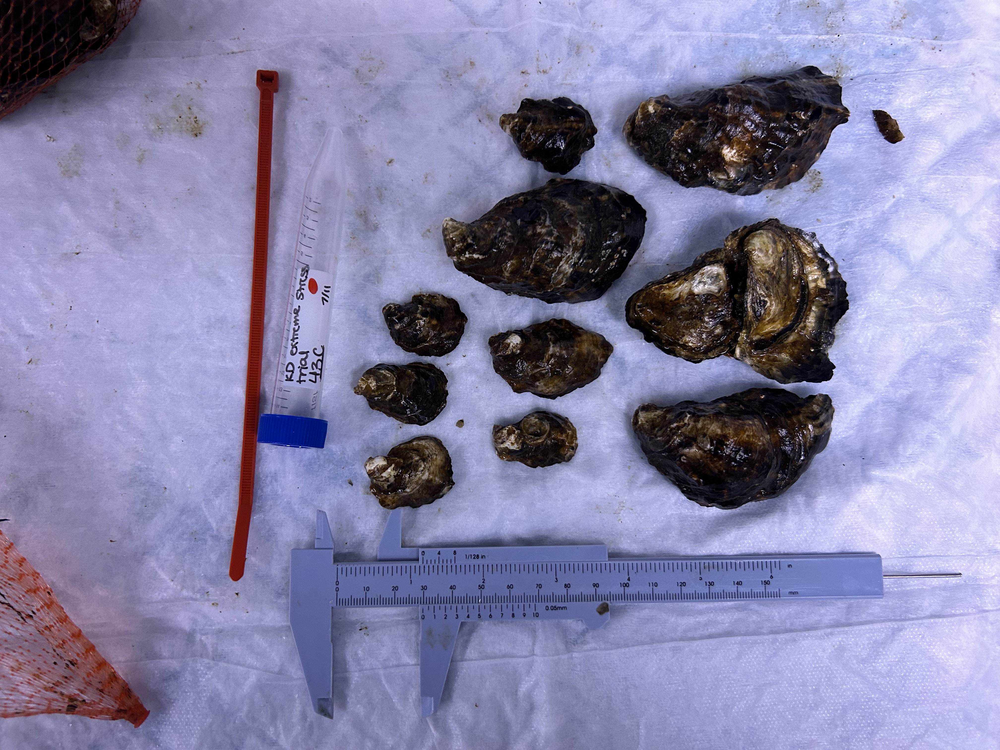
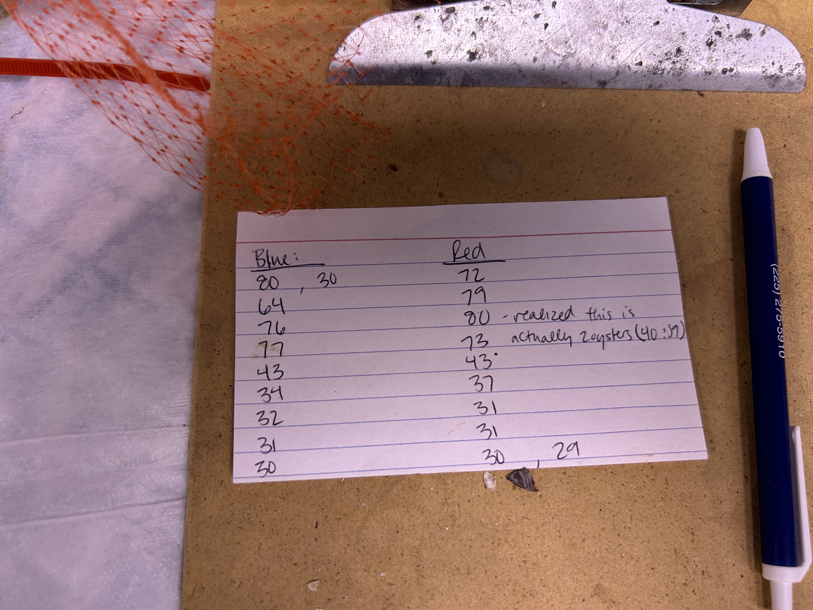
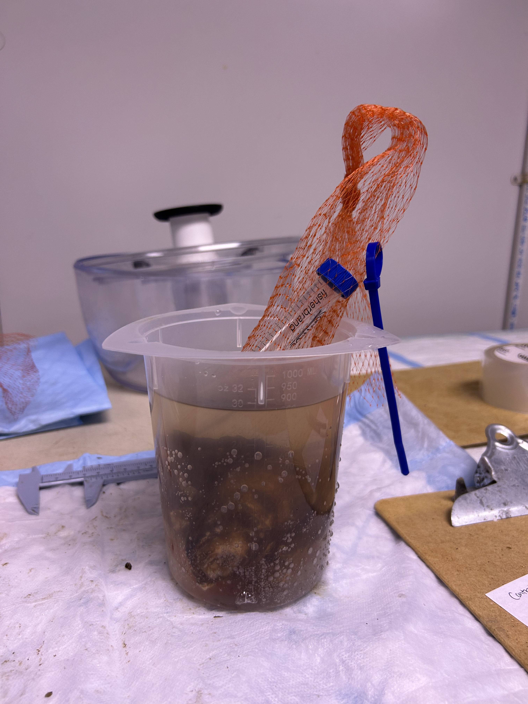
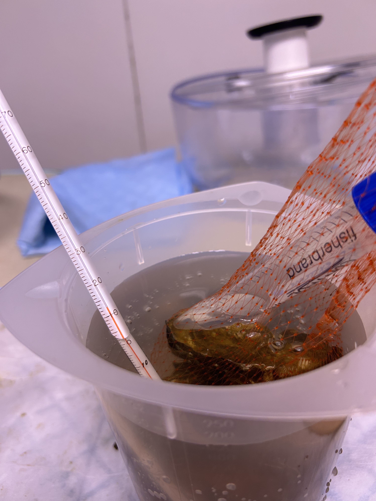
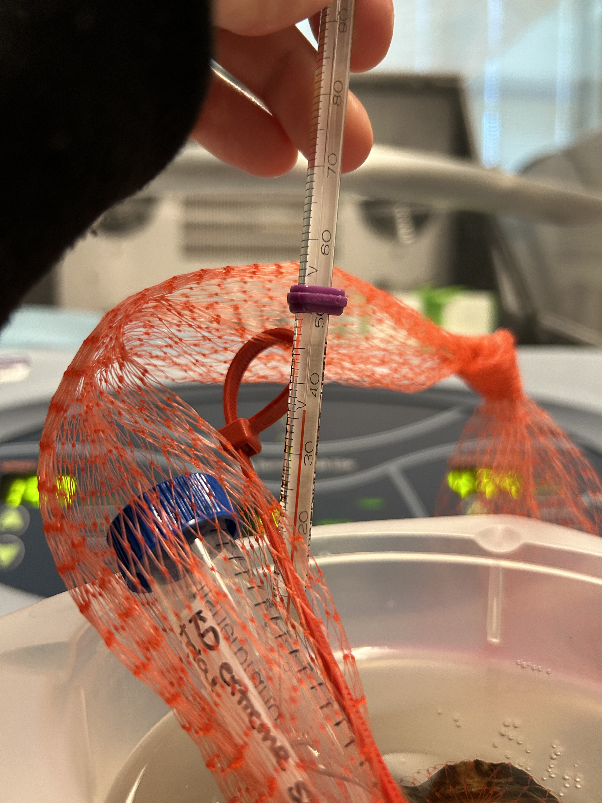

Trial run of extreme stress test using the extra untreated, diploid “13” oysters currently stored in seawater cold room in FTR.
Plan
Place oysters in 43C seawater for 1hr, then remove and return to ambient. Check daily for mortality for ~2wks.
Trial protocol
Filled a clean tripour container with 700 mL of seawater from the cold seawater tank in FTR. Placed in the incubator at 42C at roughly 13:00 7/11/2024.
Isolated two groups of 10 oysters from bag “13” (untreated diploid), selecting similarly sized sets of oysters. Placed the two groups into small mesh bags, then placed back in the cold seawater tank (~10C) in FTR. Selected and grouped oysters at roughly 15:00 7/11/2024.
Note: …at 17:30 the seawater still isn’t at 43C. Incubator is now empty so setting the incubator to 44C, covered the tripour with plastic wrap to prevent evaporation, and leaving it to finish preheating overnight. Will hopefully be able to finish this stress tomorrow.
Randomly assigned one bag to treatment and one to control. Labelled each with a labelled 15mL tube placed inside bag and a colored zip tie attached to the bag (didn’t have any waterproof bag tags). Red is 43C group and blue is control. Measured length of each oyster in each group using a caliper, then placed back in respective labelled bags. Roughly 11:30 7/12/2024.





Placed control oysters in tripour containing 700mL seawater from FTR tank, ambient temperature (13C). Left on table in cold room for 1 hr (11:47 - 12:47 7/12/2024), then placed oysters back into FTR tank.


Placed treatment oysters in tripour of warm seawater (~25C) for 10 seconds, then placed in tipour of 700mL seawater heated to 43C. Left in incubator set to 43.5C for 1 hr (11:51 - 12:53 7/12/2024). After 1 hr, removed and placed back into FTR tank.
I dipped the treatment oysters into warmed water before treatment because I was worried about them bringing down the treatment temperature when added. Unfortunately, this attempt didn’t do enough to prevent the treatment water cooling, because at the end of the 1 hr treatment the water was only ~38C, despite being held in the heated incubator the whole time.
Check oysters in both groups for mortality once per day at roughly noon for the next 2 weeks. To check mortality, remove bag of oysters from tank, empty bag onto table. An empty shell or gaping with no response to stimulation (prodding with metal tool) indicates mortality.
Notes
Big takeaway is that I need to rethink the heating mechanism. It took a whole day for 700mL of water to be heated from 13C to 43C in the incubator, and the incubator is also unable to keep the water at correct temperature after adding oysters. Part of this problem could be solved by having two tripours heated all the way to 43C and using one to “preheat” the oysters before completing the full treatment in the second cup, but I still think we’d end up with the same problem of not staying at 43.
The rod heaters used at PW seem much faster and capable of maintaining a steady temp, but they also have to be used with a greater water volume. Maybe the stress test should be done in a bucket of heated seawater? Should only take a 2-3 hrs to heat bucket to 43 with one of those rods, the larger water volume means temp would be way less reduced by addition of oysters, and the rod heater would more quickly bring the water back up to 43 if needed.
As for this current stress test trial, I’m not really sure what to do about this. If the oysters were only in 35-38C water for the entire hour then it was more like the hardening treatmetnt and I’d guess won’t be very lethal. I think I’ll check mortality daily through the weekend, and if there’s no significant mortality in either group by Monday I’ll retry the stress test.
Mortality
Checked bags daily at roughly noon for mortality. Mortality evaluated by prodding oysters and squeezing lightly at base of hinge. Empty shells or oysters that gaped and remained open during stimulation were considered dead.
| Date | Time | Control (mm length of dead oyster(s)) | Extreme stress (mm length of dead oyster(s)) |
|---|---|---|---|
| 7/13 | 13:00 | - | - |
| 7/14 | 11:15 | - | - |
| 7/15 | 12:00 | 30 | 29, 30 |
Notes: First mortalities on 7/15 (3 days after stress) in the smallest oysters, but see mortalities in both stress and control groups.